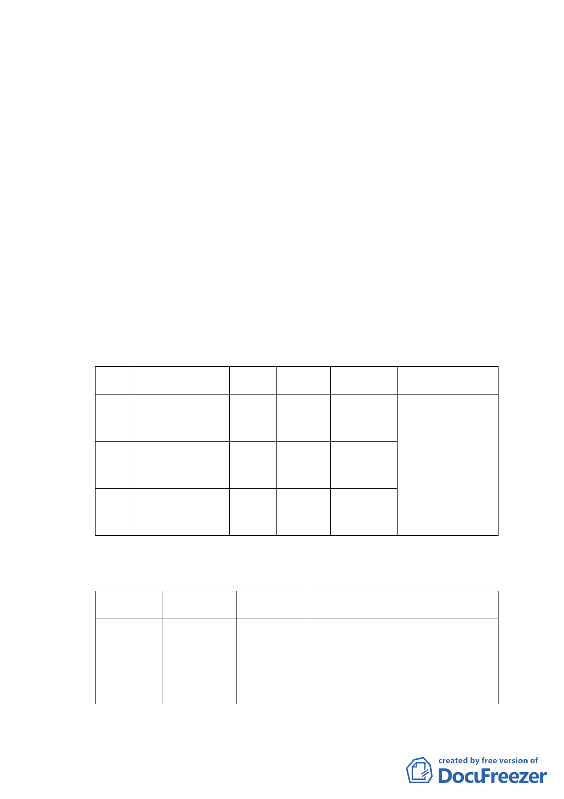

三、 土地使用現況
（一） 使用現況
本計畫區為台肥出租國宅。土地使用分區係屬第三
種住宅區，區內均為地上五層樓無電梯之公寓；現有承租
戶254戶，每戶平均空間約26至31坪；目前建物老舊屋況
不佳，日常檢修仍無法徹底解決漏水問題，且缺少保全、
防災、緊急應變等相關設備。
（二） 土地權屬
本 計 畫 區 土 地 為 南 港 區 南 港 段 四 小 段 120-12 、
120-13、120-22地號等3筆土地，面積共計8,348平方公
尺，均為本市所有。
四、 變更細部計畫內容：
（一） 變更細部計畫
編號
位置
原計畫 新計畫 面積（㎡）
變更理由
甲 臺北市南港區南港段 第三種 第三種住
四小段120-13地號 住宅區 宅區(特)
乙 臺北市南港區南港段 第三種 第三種住
四小段120-12地號 住宅區 宅區(特)
1,969 推動本市興建公營
住宅政策，增加住宅
5,394 供給，滿足市民居住
需求。
丙 臺北市南港區南港段 第三種 第三種住
四小段120-22地號 住宅區 宅區(特)
985
（二） 土地使用分區管制
1.使用強度
使用分區 原計畫
新計畫
變更理由
第三種住宅區 建蔽率 45%
(特) 容積率 225%
建蔽率 45%
容積率 450%
為推動本市公營住宅政策，充實住宅
存量以滿足中、低收入戶之租屋需
求，爰提高土地使用強度，將基準容
積由225%調整為450%。
-2-